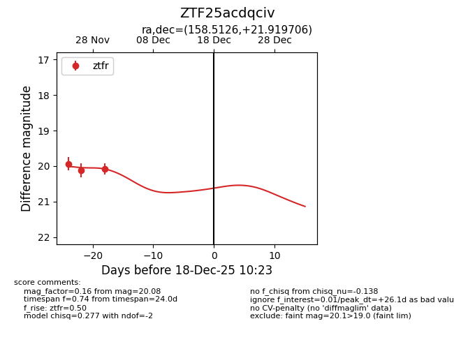
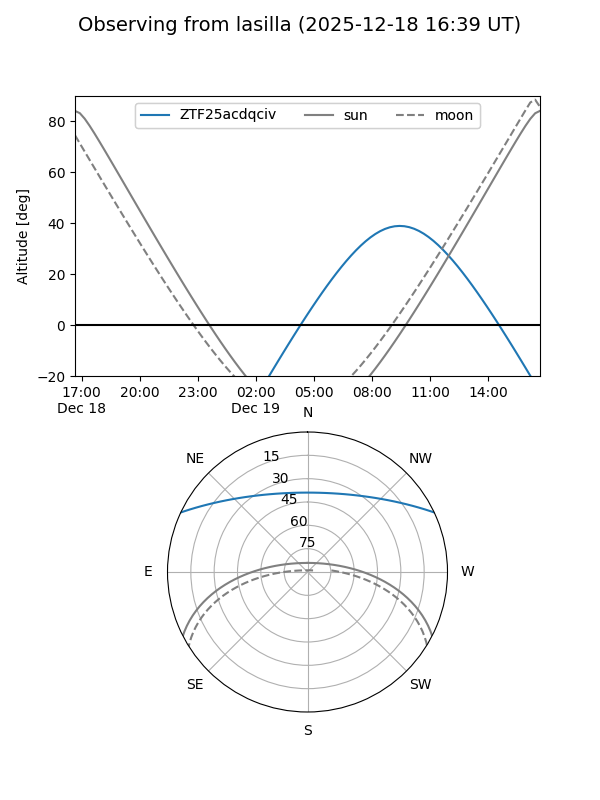
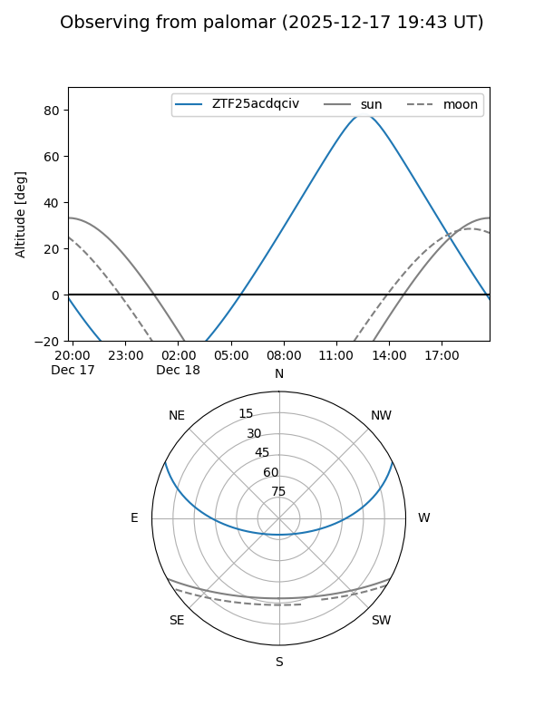

ZTF25acdqciv
Target ZTF25acdqciv at 2025-12-18 11:17
Aliases and brokers:
FINK: fink-portal.org/ZTF25acdqciv
Lasair: lasair-ztf.lsst.ac.uk/objects/ZTF25acdqciv
ALeRCE: alerce.online/object/ZTF25acdqciv
alt names
ZTF25acdqciv (ztf,fink_ztf)
Coordinates:
equatorial (ra, dec) = 158.5126,+21.91971
equatorial (HMS+DMS) = 10:34:03.02,+21:55:10.94
galactic (l, b) = (214.7946,+58.41980)
Photometry
last ztfr=20.08
3 ztfr detections
Lightcurve

Visibility


Additional plots